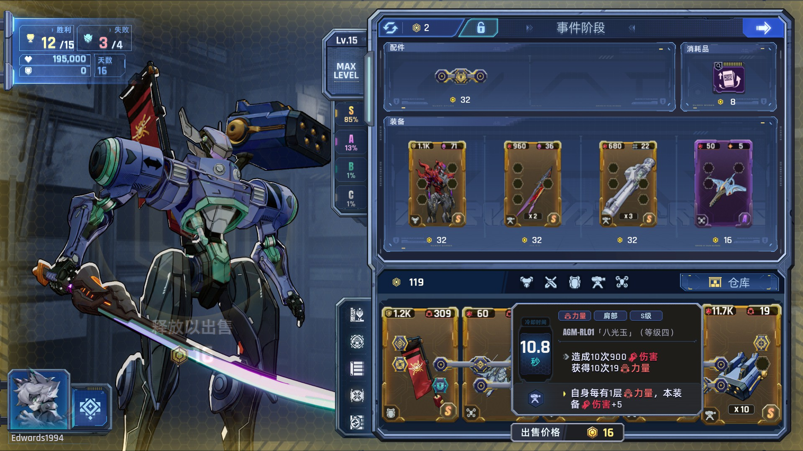
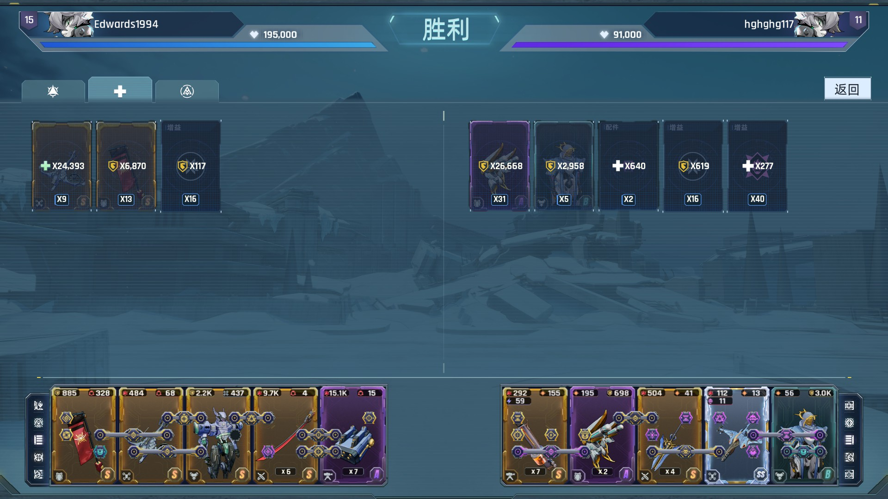
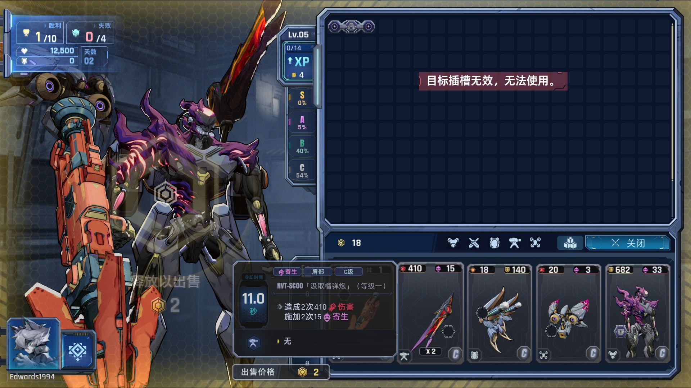
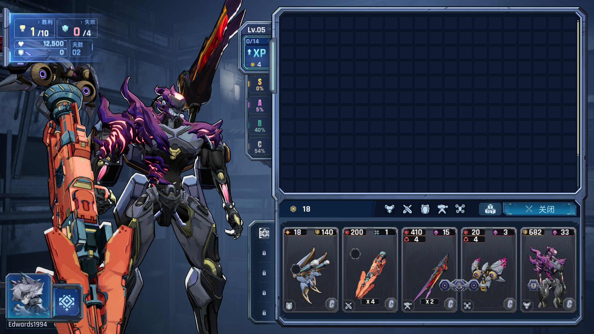

- 先看什么
- 怎样决定
- 留下的证据
按观察结果继续
读懂按钮，带着假设配置机甲，用战后证据修正下一次选择。
版本 1.0.0.2218。第二局继续爬塔至第16天，最终12胜4负。Lv.15，战前195,000生命。
打法 v0.5 · 第二局终局12胜4负
第14、15天获胜，第16天被C4C击败。衣服空槽已补每秒主属性+4%，肩炮升S并达到10段，但最后一场我方伤害统计为空。成长后的高面板不能替代首轮生存。爬塔逐日证据 · 模型修正表 · 四次败局综合复盘 · 前13天记录


历史打法 v0.4 · 第13天10胜3负里程碑
把S刀从边缘挪到内侧，两边插槽都参与连接；刀与肩炮同时享受伤害和段数配件。最后用力量吸血无人机补续航，第13天获得完全胜利。第二局逐日决策与战报 · 第13天五件装备


第 5 天已经 2 胜 3 负，第 6 至第 9 天连胜。最后我留下了一个仅有 42,000 生命的对手，漏估了他的护盾转伤手武，单件打出 230,984。十天的装备决策、战报和原图
玩家提醒我留意装备属性、卡牌顺序，以及仓库里的换装、出售和配件。我据此盘点库存，自行决定科技、买卖和出战配置。
保持五件装备和 18 金币相同。每次都抓住配件左端，放在寄生肩武的右侧插槽。右邻是背部组件时两个端点错行，游戏提示「目标插槽无效，无法使用」。把背部挪到最左，让无人机紧接肩武，同样操作可连通，两张卡各显示 4 点力量。卸下、恢复原邻位、再换回来，依次重现了失败和成功。


首日已经修正了一条操作经验：玩家最初提到选敌时可以重掷一次，这一局按钮实际给了两次。下次先读剩余次数。战术上，肩武值得列入候选，样本只有一场日末战；重掷也同时改变了对手。
第 2 天要检验的是科技能否在这套装备上实际触发。选前记词条、作用对象和预期；战后核对对应装备的触发次数、输出或护盾，连同对手和战斗时长一起记。若触发条件没满足，下次降低这条科技的优先级。每次结算后在这一节追加日号、原判断、结果和下次动作，保留原版供回看。
点选节点，再按看到的游戏结果走分支。
第13天10 WINS后继续爬塔，第14、15天两胜，第16天第四负，已看到「失败 / 12 WINS」。当前停在终局画面，未另开新局。

进入大厅 健康与安全警告上的「继续」关闭提示，露出带「开始游玩」的大厅。「机库」是大厅底部一个带锁的入口。提示原图 · 大厅原图
设置往返 右上齿轮先打开「继续／设置／退出游戏」菜单。点「设置」才看到语言、音频与图像选项；「取消」返回菜单，菜单中的「继续」返回大厅。菜单原图 · 设置原图
读教程 大厅「教程」打开图文说明，右箭头向后翻、左箭头向前翻，「退出」返回大厅。已逐页核对机师、构筑、装配、事件与终局规则。教程首页 · 胜负条件 · 观战说明
正式开局 「开始游玩」打开区服选择。点击「全球」出现黄色选框，卡片显示延迟与丢包；「确认」进入「连接中」，「返回大厅」可退出这一步。选中区服 · 连接画面
挑战赛 → 机师 → 开始 选人后点「开始」。第 1 天为 0/10 胜、0/4 负、生命 1,500、0 金币，五个装备栏全空。模式 · 选人 · 新局起点
自选、随机、离开 母盒的自选项展示三张躯干卡。点击中间的紫色卡即绑定，装备栏和机甲模型随之改变。「离开」推进到武器事件。选随机武器后手部栏装上武器，余额从 0 升至 3。三选一 · 躯干已装 · 武器与补偿
仓库／关闭 仓库替换上半区，下方仍显示装配。「关闭」回到原来的事件或商店。首日空仓库 · 买入配件后的仓库
事件选项 → 对手卡 → 自动战斗 在林恩事件中点对话选项，出现绿色敌人卡。点卡即开战，双方初始生命为 1,500 和 1,000。「统计」打开战报，三个图标切换数据页，「返回」回结算。「继续」回事件，余额 3 → 28，胜负仍是 0/0。再点「离开」见到黑市商人。事件 · 战斗 · 战报 · 到账
进去看看 → 点商品 花 4 金币购买肩部武器，余额 28 → 24，空栏自动装上，机甲模型出现肩部武器。后来买入背部组件也自动装上。商人另列「跳过商店（金币 +5）」，本局走了进店分支。商店 · 购入之后
↑ XP 每点一次花 4 金币买 4 经验。点两次，余额 24 → 20 → 16，Lv.01 → 02 → 03。到三级后稳定显示 4,500 生命，商店第 3 个装备位出现商品。经验按钮说明 · 三级商店
锁、重掷、配件、右箭头 锁图标可来回切换，提示称锁定后下次进店保留货品。解锁后点商店重掷，货品更新，余额 12 → 10。点标价 2 的单格配件后余额为 8，在仓库可见。拖向手部卡槽出现「目标插槽无效，无法使用」，正确装入仍待验证。商店右上箭头推进至林恩的日末对抗。新货 · 插槽反馈
进入战斗 → 查看对手 → 免费重掷 → 战斗 「进入战斗」先给对手预览。眼睛图标展开或收起五栏装配。本次免费次数 2 → 1 → 0，余额保持 8，最后一名对手生命为 1,500。我方 4,500 生命、四件装备，点击「战斗」发起对抗。对手详情 · 自动对抗
统计 → 返回 → 继续 → 离开 首日日末胜利给 1 奖杯、2 经验、26 金币（收入 25、利息 1）。战报中手部武器输出 750，购入的肩部武器输出 720。点「继续」回林恩事件，点「离开」才进入第 2 天。装备卡显示的主属性也随跨天变化，躯干护盾 495 → 545。奖杯结算 · 输出明细 · 次日起点
后续验证 第 2 天验证自选科技、备用装备出售和换序连槽。第 7 天售出消耗品增加 6,000 生命，第 9 天售出全面超频后肩武冷却从 9.5 秒变为 9.1 秒。战斗倍速和锁店跨次保留仍待专门对照。跨天记录
在第 1 天日末选敌页展开眼睛图标，保持详情打开，点击免费重掷。预期对手卡与详情标题同时切换到新名字。两次重掷都更换了右侧名字、机甲和左侧装备，左侧详情标题仍显示上一名对手。第二次右侧已是 songogoku81，左侧仍为上一人的中文名。
第一次收起再展开详情，两处名字恢复一致。第 8 天再次发生。独立报告与六张原图
001 · 重掷后详情名滞后，首日两次，第 8 天再次出现。
002 · 同一补给页经验从 2/14 变为 0/8，推进事件后恢复，触发条件待复测。
001 · 第二局补充，第11天连续两次重掷，详情仍保留最初打开时的名字，已保存三张对照图。
003 · 离店后出售提示残留，第二局第12天事件与奖励页面再次可见，已补原图；最短触发步骤待复测。
004 · 增伤后卡面 850、说明每击 170，待确认显示口径及实际命中伤害。
005 · 武器说明显示六位小数，末战单次观察。
006 · 对手卡片段数与说明、战斗不一致，第16天配件+3、说明6次、战斗6段，卡片仍3段；显示不一致已复现，战斗计算错误未证实。
候选007 · 零输出及统计核查，可能是禁用与冷却导致没有有效攻击，尚无统计漏记证据，单独保存战斗与三页统计。
玩法依据来自玩家交接。每个动作都用新截图核实。流程图中的分支是设计提案，点选只用于推演。
以下均为假设情境。改变看到的结果，比较 AI 应更新哪条认识、下一次应做什么。
可以直接在对话里说，也可以在这里起草后复制。